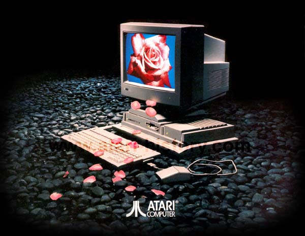
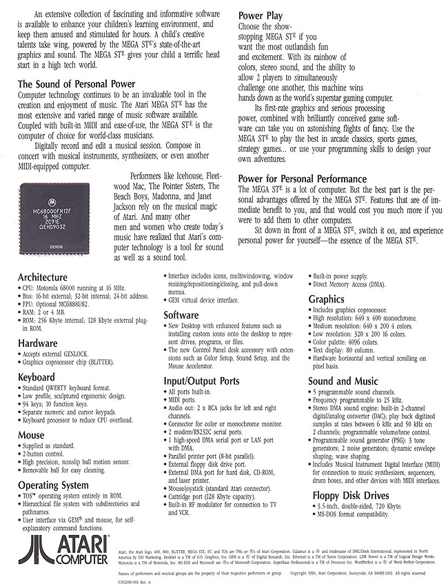

The Atari Mega STe Computer System. Next to the Atari
TT030, this was one of the most eagerly anticipated Atari computer systems.
Using the Atari TT030 module-ized case design in ST grey the Atari Mega
STe had all of the features that Atari computer users wanted.
Detachable keyboard, SCSI hard drive, IBM format compatible 720K 3.5" floppy
drive, 16Mhz 68000, Blitter graphics chip, stereo sound and much much more.
The Atari Mega STe was a truly great improvement on the ST line of computers.
Technical Specifications
